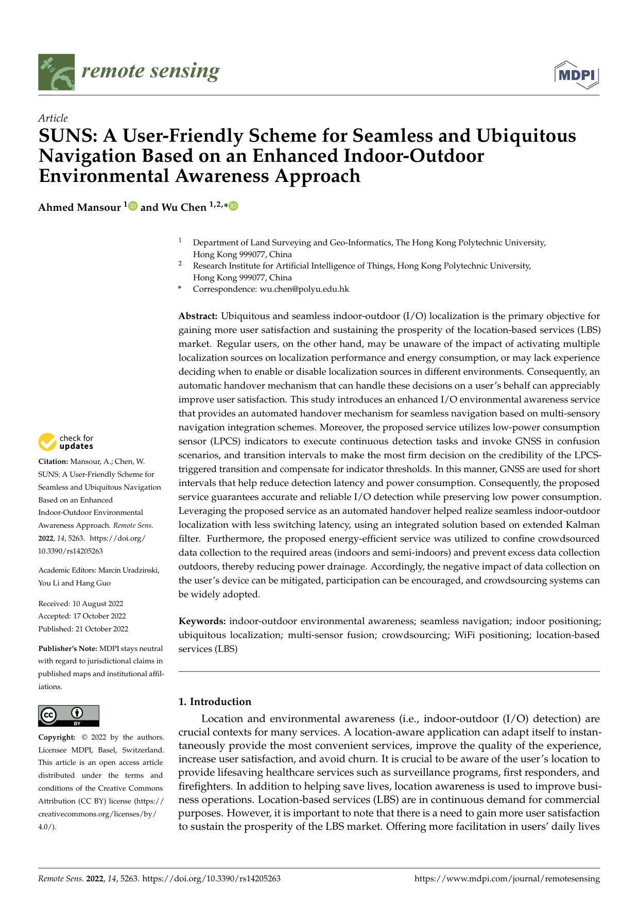

SUNS: A User-Friendly Scheme for Seamless and Ubiquitous Navigation Based on an Enhanced Indoor-Outdoor Environmental Awareness Approach
Paper preview

Extended summary
This paper presents SUNS, a user-friendly seamless navigation scheme based on enhanced indoor-outdoor environmental awareness for switching and integrating positioning resources across environments.
When to cite this paper
- indoor-outdoor detection supports seamless navigation
- smartphone positioning systems switch across indoor, semi-outdoor, and outdoor environments
- environmental awareness is used for navigation mode selection
- seamless IPS/GNSS/PDR integration is reviewed
Keywords
seamless navigationindoor-outdoor detectionenvironmental awarenesssmartphone positioningPDRGNSSWi-Fiuser-friendly navigation
Official link
https://doi.org/10.3390/rs14205263
For publisher-restricted articles, link to the DOI or an allowed accepted manuscript rather than uploading a restricted PDF.
BibTeX
@article{Mansour2022suns,
title = {SUNS: A User-Friendly Scheme for Seamless and Ubiquitous Navigation Based on an Enhanced Indoor-Outdoor Environmental Awareness Approach},
author = {Ahmed Mansour and Wu Chen},
year = {2022},
journal = {Remote Sensing},
doi = {10.3390/rs14205263},
}